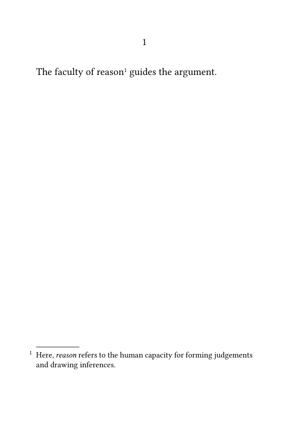
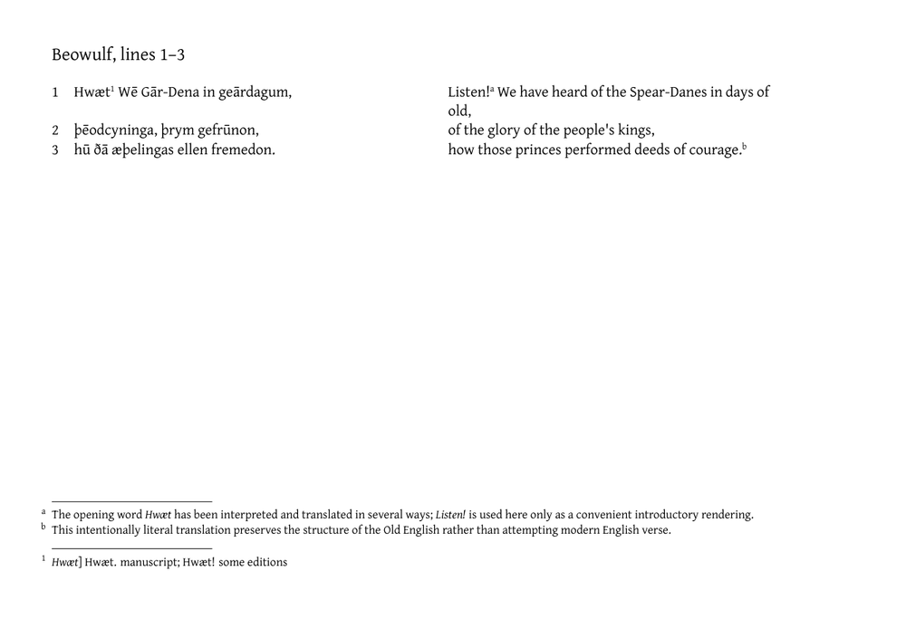

Work in progress. This orientation page and the related guides are currently being drafted and reviewed. Please do not modify them while this notice is displayed.
Critical apparatus guides: Glossary · Orientation · Start with Guide 1
A critical apparatus records the textual evidence on which an edited
text is based. It shows where the wording, spelling, punctuation, order, or
presence of a passage differs among manuscripts, printed editions,
translations, quotations, editorial conjectures, or other textual witnesses.
A typical apparatus entry brings together three elements:
- a lemma : the passage in the edited text to which the entry refers;
- one or more readings or textual operations ;
- the witnesses , editors, or sources associated with those readings or operations.
For example, an editor may print the word reason in the edited text while recording that manuscript A has the alternative reading understanding, manuscript B omits the word, and a modern editor proposes judgement as a conjectural correction.
These statements do not all have the same form. Understanding and judgement are readings: they supply textual wording. An omission is instead a textual operation: it states that no corresponding wording is present in the witness. Keeping this distinction clear becomes important when apparatus entries are represented systematically.
Contents
- 1 Footnotes and critical apparatuses
- 2 1. What the guides progressively introduce
- 3 2. Guide overview
- 4 3. Choosing a starting point
- 5 4. Scope of the collection
- 6 5. Responsibilities within the workflow
- 7 6. Terminological conventions
- 8 7. Typographical and coding conventions
- 9 8. Relationship to TEI XML
- 10 Related pages
Footnotes and critical apparatuses
A critical apparatus must not be confused with an ordinary set of footnotes.
The difference is first of all a difference of editorial function:
- an ordinary footnote may explain a concept, identify a source, discuss an interpretation, justify a translation, or add contextual information;
- a critical apparatus entry records textual evidence: the lemma, alternative readings, omissions, additions, conjectures, and the witnesses associated with them.
An explanatory note may therefore answer a question such as:
What does the word reason mean in this passage?
A critical apparatus entry answers a different question:
Which textual forms of this passage are transmitted or proposed, and by which witnesses or editors?
Same position, different function. Footnotes and apparatus entries may both appear at the bottom of the page. Their similar position does not make them the same kind of annotation. One explains or comments on the text; the other records the textual evidence from which the edited text has been established.
The distinction also concerns their implementation in ConTeXt.
An ordinary explanatory note can use the standard \footnote
command. An apparatus can instead use a separately defined note series. This
allows its numbering, placement, layout, and typography to be controlled
independently from those of ordinary footnotes.
Example 1: an explanatory footnote
-
\mainlanguage[en] \setuppapersize[A6] \setupbodyfont[libertinus,10pt] \starttext The faculty of reason\footnote {Here, {\it reason} refers to the human capacity for forming judgements and drawing inferences.} guides the argument. \stoptext
-

Result 1. An ordinary footnote comments on the meaning of the printed text.
Example 2: explanatory notes and a critical apparatus
The following example places three lines from the opening of Beowulf beside a deliberately literal modern-English translation. It uses two independent annotation systems:
- alphabetic footnotes explain the Old English or the translation;
- numbered apparatus entries record editorial information about the text.
-
\mainlanguage[en] \setuppapersize[A5,landscape] \setuplayout [backspace=12mm, topspace=10mm, width=middle, height=middle, header=0mm, footer=7mm] \setupbodyfont[gentium,10pt] % Ordinary explanatory footnotes use letters. \setupnote [footnote] [location=page] \setupnotation [footnote] [numberconversion=characters] % Critical apparatus entries form an independent numbered series. \definenote[apparatus] \setupnote [apparatus] [location=page] \setupnotation [apparatus] [numberconversion=numbers] \define[2]\appentry {#1\apparatus{{\it #1}] #2}} \starttext \subject{Beowulf, lines 1--3} \startpostponingnotes \starttabulate[|r|p(.40\textwidth)|w(1.5em)|p(.40\textwidth)|] \NC 1 \NC \appentry {Hwæt} {Hwæt. manuscript; Hwæt! some editions} Wē Gār-Dena in geārdagum, \NC \NC Listen!\footnote {The opening word {\it Hwæt} has been interpreted and translated in several ways; {\it Listen!} is used here only as a convenient introductory rendering.} We have heard of the Spear-Danes in days of old, \NC \NR \NC 2 \NC þēodcyninga, þrym gefrūnon, \NC \NC of the glory of the people's kings, \NC \NR \NC 3 \NC hū ðā æþelingas ellen fremedon. \NC \NC how those princes performed deeds of courage.\footnote {This intentionally literal translation preserves the structure of the Old English rather than attempting modern English verse.} \NC \NR \stoptabulate \stoppostponingnotes \stoptext
-

Result. Alphabetic notes explain vocabulary and translation, while the numbered apparatus independently records an editorial treatment of the Old English text.
Result 2. A dedicated note series records textual evidence in the form of an apparatus entry.
Here the command \variant performs two related tasks:
-
it prints the lemma
reasonin the edited text; -
it creates an entry in the separate
apparatusnote series.
The resulting apparatus entry states that witness A reads
understanding, while witness C omits the lemma. The abbreviation om. means “omits” or “omitted”; it is an editorial convention,
not a ConTeXt command.
Typographically, the two examples may look similar because both annotations are placed at the bottom of the page. Structurally, however, the second example uses a distinct note mechanism. This makes it possible to keep explanatory footnotes and textual apparatus entries separate even when both occur in the same edition.
Important distinction. Defining a note series called
apparatus does not by itself create a scholarly critical
apparatus. The critical character of the entry comes from the information it
records and from the consistent editorial conventions used to represent that
information.
In these introductory guides, a dedicated note series provides the simplest way to demonstrate the construction of an apparatus. More complex editions may later replace this direct notation with structured witness declarations, several apparatus layers, line-based references, or editorial records stored and processed independently of their printed form.
ConTeXt can therefore support this work at several levels. A small edition may use a dedicated note series and a few reusable commands. A larger project may declare witnesses systematically, maintain several apparatus layers, align an original text with a translation, or store structured editorial records in Lua before selecting and rendering them in different forms.
The six guides listed below follow that progression. They begin with a minimal apparatus entry, then separate the notation of variants from their typographical presentation, the description of witnesses, the management of several annotation layers, the composition of parallel texts, and finally the storage and processing of structured editorial data.
For definitions of the principal terms used throughout the collection, see Glossary of critical edition terms.
For definitions of the principal terms used throughout the collection, see Glossary of critical edition terms.
How to use this collection. Readers approaching critical apparatuses for the first time should follow the guides in order. Readers who already have an apparatus workflow may begin with the guide corresponding to the particular editorial or technical problem they need to solve.
1. What the guides progressively introduce
The collection moves from a directly typeset note to an increasingly explicit editorial model:
a passage linked to an apparatus note
↓
a reusable notation for lemmas and variants
↓
declared witnesses and classified textual evidence
↓
separate apparatus and annotation layers
↓
coordinated original text, translation, and notes
↓
structured records that can be validated and rendered
Each stage preserves what was introduced earlier while assigning a clearer responsibility to the edited text, the editorial data, or the typographical machinery.
2. Guide overview
| Guide | Concept introduced | Practical result |
|---|---|---|
| Guide 1 Building a simple critical apparatus |
An apparatus entry can be attached to a passage by means of a dedicated note series. | Create a first compact apparatus and understand the relation between the edited text, the lemma, and the apparatus entry. |
| Guide 2 Formatting a critical apparatus |
The notation of textual variation can be separated from its visual presentation. | Define reusable commands for lemmas, readings, omissions, additions, conjectures, and witness sigla, then control how they are printed. |
| Guide 3 Managing witnesses and textual variants |
Witnesses and variants can be represented as identifiable editorial objects rather than repeated pieces of formatted text. | Declare witnesses once, distinguish identifiers from printed sigla, and associate readings or textual operations with the appropriate evidence. |
| Guide 4 Using multiple apparatus layers |
Different kinds of annotation should remain logically and typographically distinct. | Maintain independent series for textual variants, source notes, translation notes, commentary, or other editorial functions. |
| Guide 5 Typesetting an original text and translation in parallel |
Parallel texts require coordinated layout without merging their distinct scholarly annotations. | Align an original text and a translation while preserving separate note series, apparatus entries, and line-based references. |
| Guide 6 Managing structured critical data with Lua |
Editorial records can be stored independently of the form in which they are published. | Register, validate, filter, sort, transform, and render critical data in more than one output form. |
3. Choosing a starting point
Readers new to critical apparatuses in ConTeXt should begin with Guide 1: Building a simple critical apparatus and follow the guides in order.
Readers who already have an apparatus mechanism may enter the sequence at the point corresponding to their present task:
- to create a first apparatus note, begin with Guide 1 ;
- to standardize the notation and appearance of entries, see Guide 2 ;
- to declare and reuse witnesses systematically, see Guide 3 ;
- to separate critical, explanatory, source, and translation notes, see Guide 4 ;
- to compose an original text and translation together, see Guide 5 ;
- to validate and transform data-driven editorial records, see Guide 6 .
Each guide contains at least one complete minimal working example. Later guides reuse concepts introduced earlier, but each guide remains centred on a specific editorial objective.
4. Scope of the collection
The examples are deliberately small. Their purpose is to make the relevant ConTeXt mechanisms visible and to show how those mechanisms can be combined in increasingly structured workflows.
The guides do not prescribe a single model of critical editing. The form of an apparatus depends on the edited work, the nature of its witnesses, the editorial method, the amount of evidence to be reported, and the expectations of its readers. The examples should therefore be treated as adaptable patterns, not as universal conventions.
The collection concentrates on apparatuses created directly with ConTeXt and, in the final guide, Lua. Editions whose textual data are encoded in TEI XML require an additional transformation layer. That broader workflow is treated separately in Building critical editions from TEI XML.
Editorial principle. The edited text, the description of textual evidence, and the typographical rendering of the apparatus are related, but they are not the same thing. Keeping them distinct makes an edition easier to revise, validate, and publish in more than one form.
5. Responsibilities within the workflow
As the examples become more structured, four responsibilities are gradually distinguished:
- the edited text identifies the passages to which apparatus entries belong;
- the editorial record describes lemmas, readings, witnesses, sources, and textual operations;
- ConTeXt controls the placement, numbering, layout, and typography of the apparatus;
- Lua , when needed, validates, filters, sorts, groups, or transforms structured records before they are typeset.
This division is not a requirement for every project. A short edition may combine several of these tasks in a few ConTeXt commands. The distinction becomes useful when the same information is repeated, checked automatically, or reused in several outputs.
The same separation of responsibilities can later be extended to textual data stored in TEI XML.
6. Terminological conventions
The guides use the following terms consistently:
| Term | Meaning | Typical example or distinction |
|---|---|---|
| Edited text | The text established and printed by the editor. | The reading presented in the main body of the edition. |
| Lemma | The passage in the edited text to which an apparatus entry refers. | In these guides, lemma is preferred to the less precise expression apparatus lemma, unless a contrast requires the longer form. |
| Reading | A textual form found in, attributed to, or proposed for one or more witnesses. | A reading contains wording, such as reason or understanding. |
| Textual operation | A description of what happens to a passage rather than an alternative wording. | Typical operations include omission, addition, transposition, substitution, and conjectural intervention. |
| Witness | A source that transmits or provides evidence for a textual form. | A witness may be a manuscript, printed edition, quotation, translation, or another document used by the editor. |
| Witness identifier | The internal name used in the source code to refer to a witness. | For example, vat-gr-1209 or witness-B.
|
| Siglum | The short printed label used to identify a witness in the apparatus. | For example, A, B, or P1. |
| Apparatus entry | The complete unit that connects a lemma with one or more readings or textual operations and their supporting witnesses. | For example: ratio] oratio B; ratione C D.
|
| Apparatus layer | One logically distinct series of apparatus entries or scholarly annotations. | In these guides, each layer is normally represented by a separate ConTeXt note series. |
For fuller definitions and examples, see Glossary of critical edition terms.
7. Typographical and coding conventions
Unless a guide explicitly states otherwise, the examples follow these conventions:
- words or passages cited as textual readings are set in italics in explanatory prose;
- witness sigla are also set in italics when mentioned as examples in prose, but their appearance in the apparatus is controlled by the example's ConTeXt commands;
- technical terms are set in bold when they are defined or introduced;
-
ConTeXt command names, Lua identifiers, XML element names, and literal source-code values are placed in
monospace; -
capital letters such as
A,B, andCserve as simplified witness identifiers and sigla unless a distinction between the two is being demonstrated; - square brackets in an apparatus entry indicate editorial notation only when the example explicitly defines that convention;
-
abbreviations such as
om.,add., andconj.are examples of apparatus notation, not mandatory ConTeXt keywords; - every minimal working example is intended to be copied as a complete ConTeXt document before being adapted;
- fictitious passages and simplified witnesses are used to keep the mechanism visible; they are not proposed as models of historical evidence.
The guides distinguish semantic structure from typography whenever possible. For example, a command representing an omission should identify an omission; its printed abbreviation, punctuation, spacing, and font should be defined separately.
8. Relationship to TEI XML
The present collection begins with editorial information entered directly in ConTeXt source files. This makes the basic mechanisms easy to inspect and is sufficient for many small or medium-sized projects.
TEI XML addresses a different level of the workflow. It can encode textual structure, witnesses, readings, omissions, additions, and editorial relationships independently of a particular typesetting system. ConTeXt can then be used to transform and render that encoded information.
The two approaches are therefore related but should not be confused:
- these six guides explain how ConTeXt represents and typesets a critical apparatus;
- Building critical editions from TEI XML explains how encoded TEI data can become the source of a ConTeXt edition.
Related pages
Critical apparatus guides: Glossary · Orientation · Next: Guide 1 — Building a simple critical apparatus →